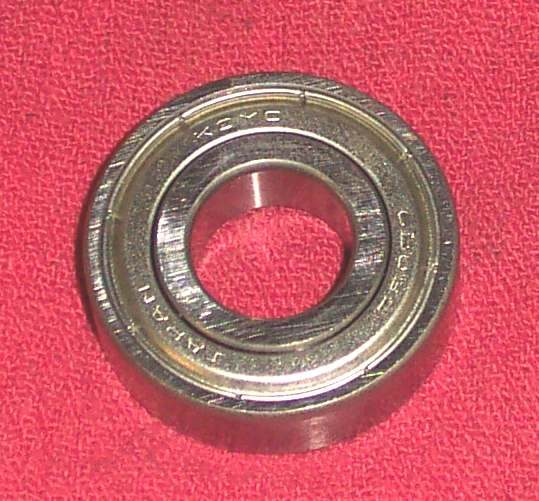
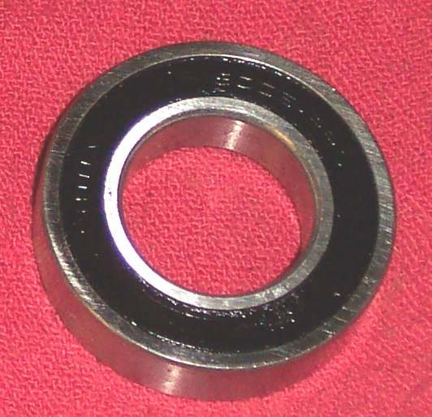
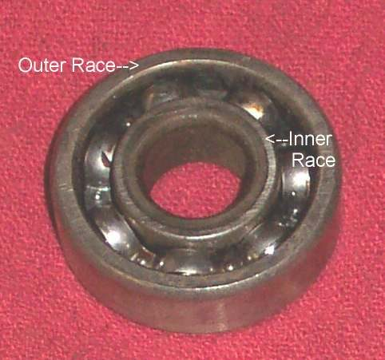
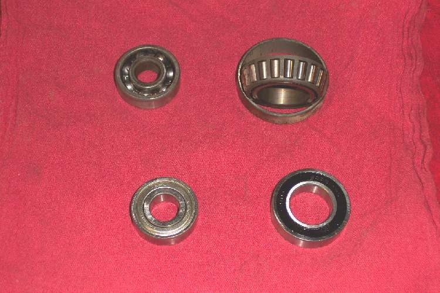
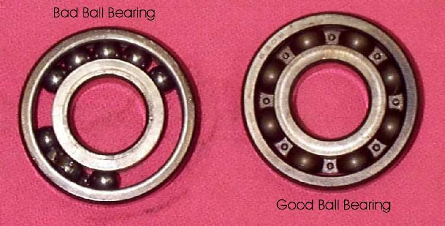
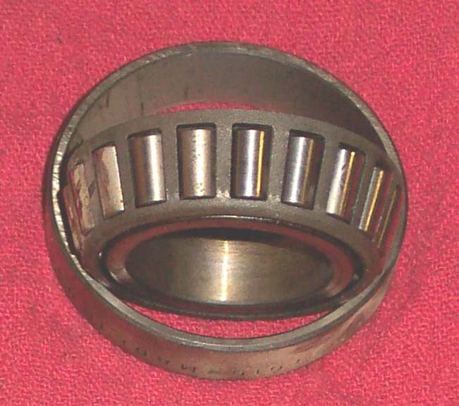

Bearings let shafts turn with very little friction. They are found on the crankshaft, gearbox shafts and some camshafts. A failing bearing can lock a shaft, damage the case and put metal through the engine. When a case is open, every bearing should be checked before it goes back.
Know what you are looking at
- Unshielded ball bearing: open on both sides. Used on two-stroke crankshafts, which are oiled by the fuel mix, and in gearboxes and camshafts fed with engine oil.
- Steel or rubber shielded bearing: pre-packed with grease, used where outside oil is limited, such as wheels. Rubber shields can often be levered off to regrease. Steel shields are usually ruined by removal.
- Tapered roller bearing: used for wheels and steering heads. It can be adjusted as it wears.
- Needle bearing: caged needles used on two-stroke rod ends.
Safety
- Wear safety glasses. A bearing that comes apart can throw balls.
- Do not spin a dry bearing with compressed air. It can run away and fly apart.
- Support the case or shaft when pressing or tapping. Do not let it drop.
Steps
- Clean the bearing in solvent and let it dry. Keep it free of dust.
- Look at the balls or rollers and the races. Check for missing balls, flat spots, pitting, blue heat marks, rust or scoring.
- Hold the inner race and turn the outer race. It should feel smooth and quiet. Notchy, gritty or rough means replace it.
- Check for play by pressing the outer race sideways. Any clear play, or a rattle, means replace it.
- Check the seals and shields. Replace if the shield is loose or the rubber is cracked.
- Check the housing and shaft for scoring where the bearing sat.
- If a bearing must be removed again, always push on the inner race to take it off a shaft. If you must pull on the outer race, replace the bearing.
- Fit new bearings of the same size and type. A tight fit may need heat on the case and cold on the bearing, or the reverse for a shaft. Follow the manual's method and keep within its temperature limit.
Warning signs
- A shaft that suddenly locks, then frees when turned back and forth, may have a failed bearing with missing balls. Do not start the engine again.
- Rumbling or growling while running: Rumbling or growling from inside the engine.
Check your work
- The shaft turns smoothly in the bearing by hand.
- No end float beyond the manual's limit.
- Case halves close without binding: Split and rejoin the engine crankcase.
When to go to a workshop
- The bearing is an interference fit and you have no press or tools.
- You find metal particles in the oil or case.
- The crankshaft bearing is damaged.